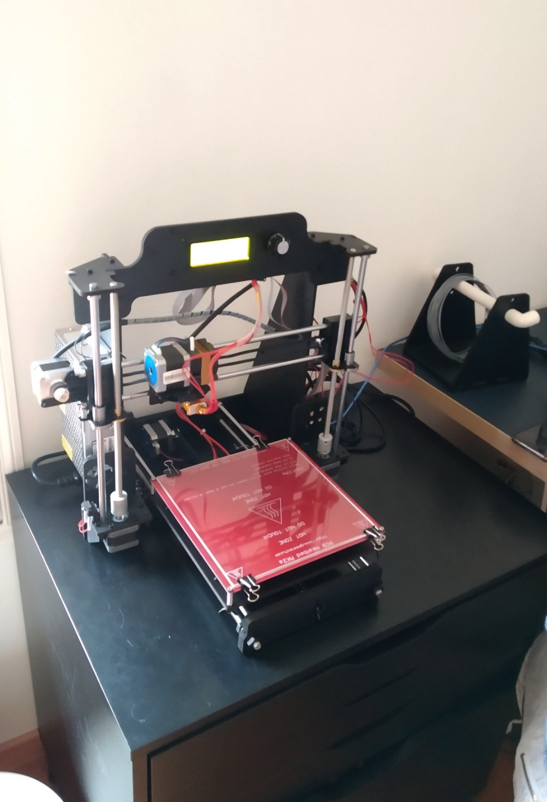
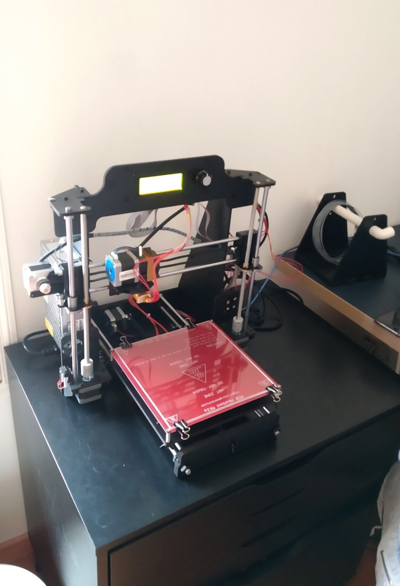
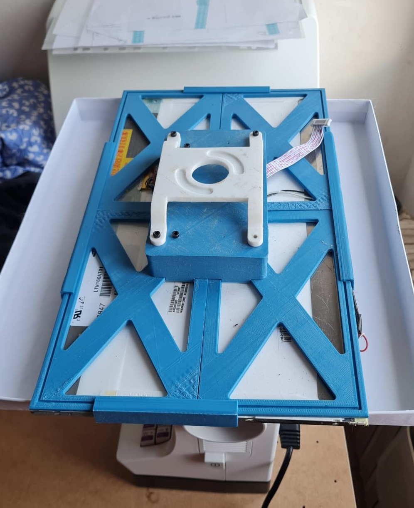
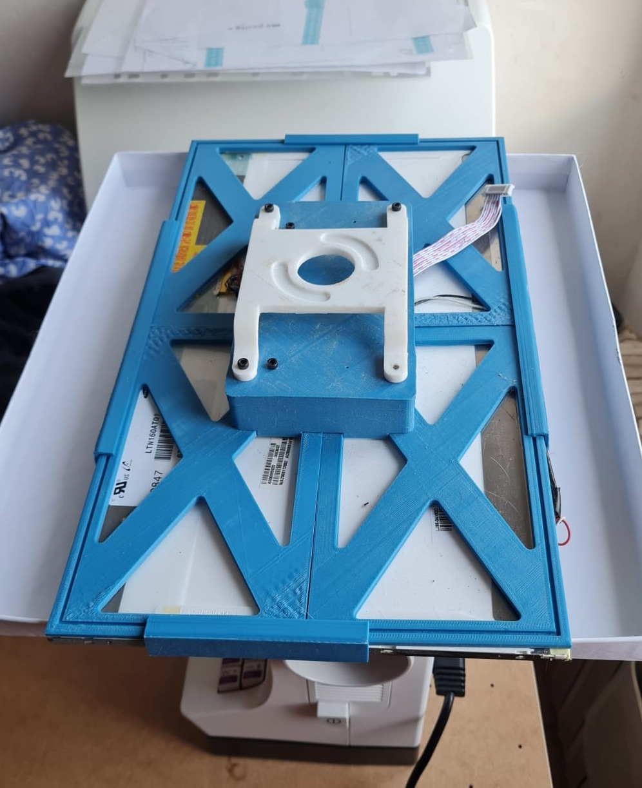
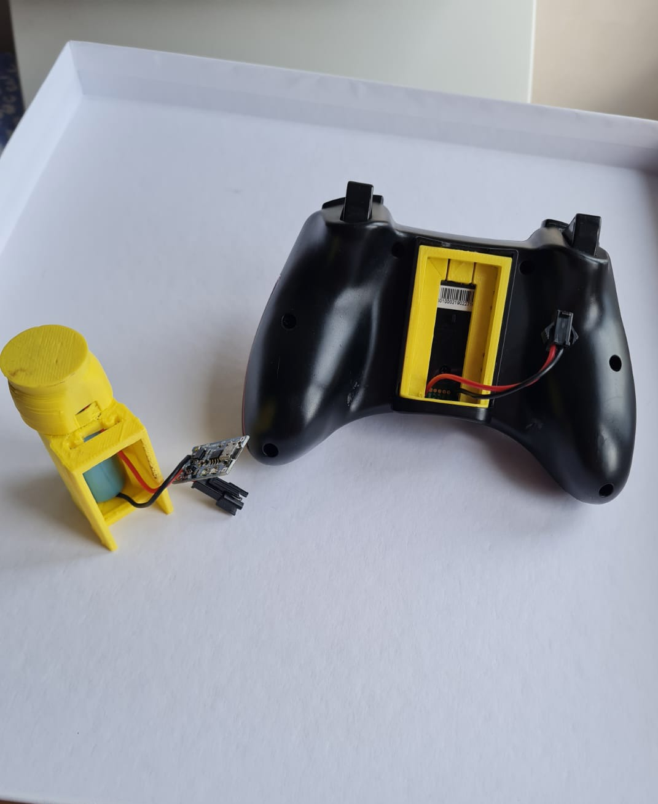
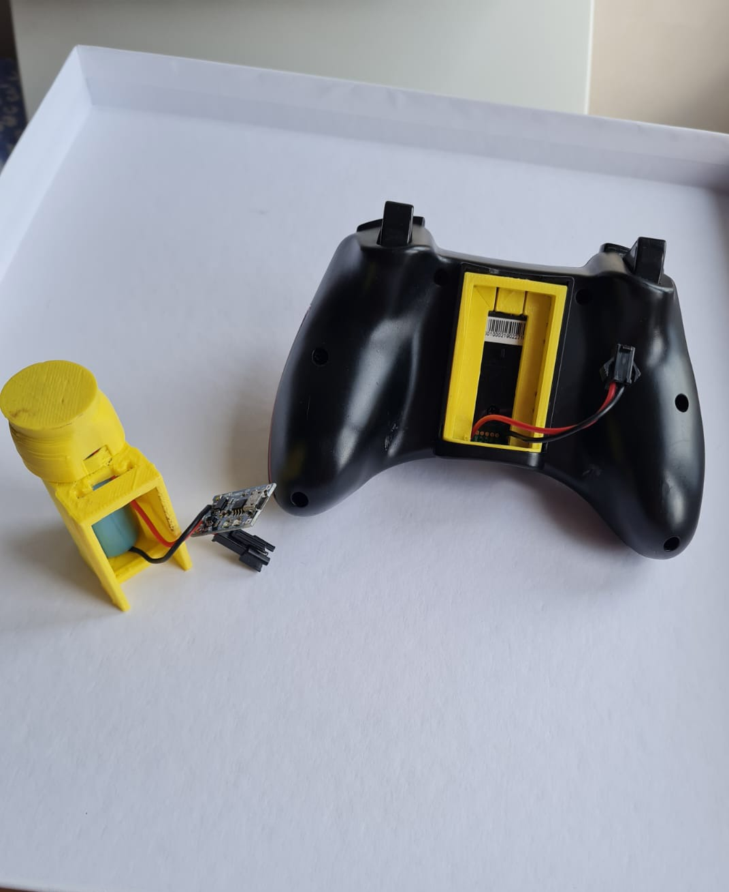
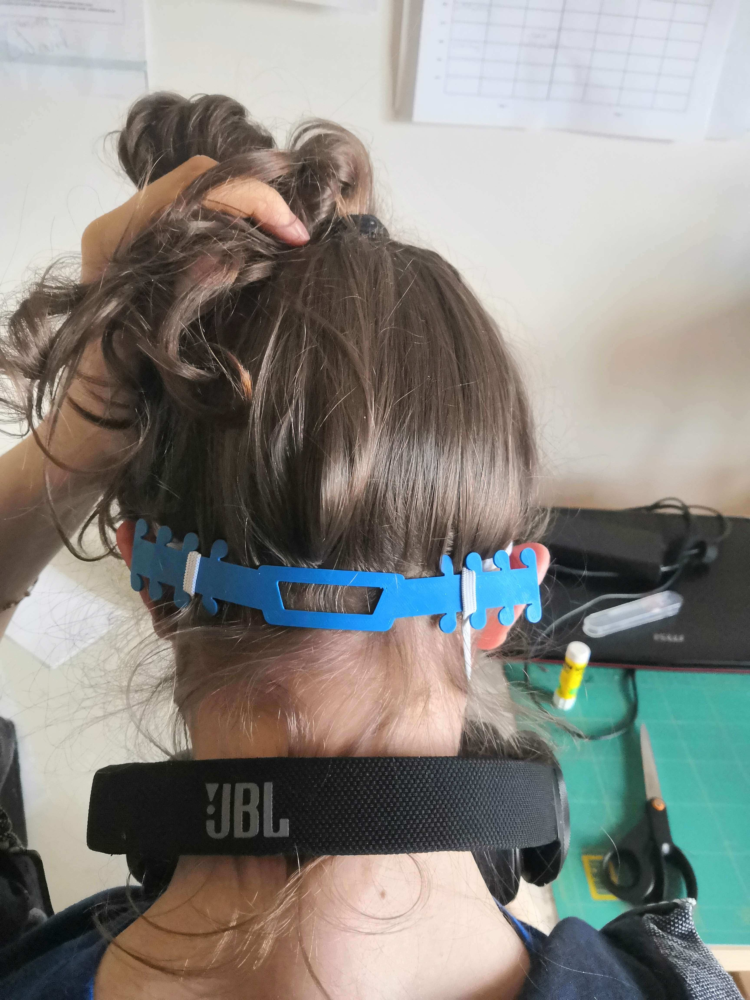
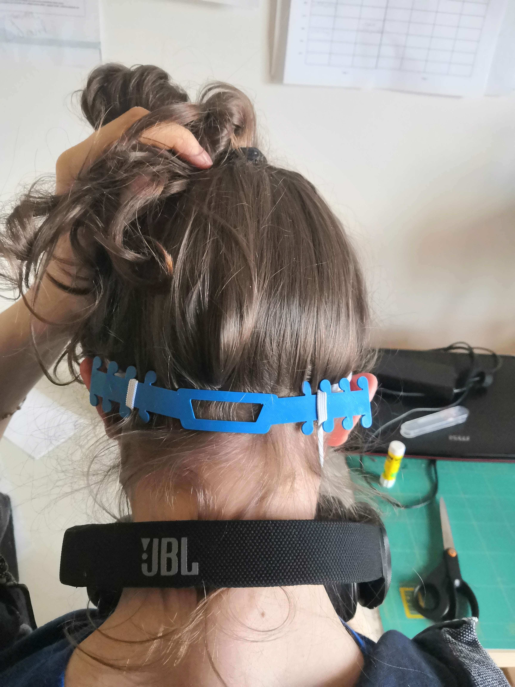

Je traîne souvent sur des sites de hacker/maker tel que Hackster.io, Hackaday ... Et j'ai constaté comment les imprimante 3D sont rapidement passé d'une technologie à la pointe à un hobby très accessible avec des multiples applications. Avec la venue du confinement, j'ai vite constaté que j'allais avoir besoin d'un passe-temps, je me suis donc commandé une imprimante 3D en kit. J'ai parcouru de nombreux forums en quête de la bonne imprimante, pour au final me décider d'acheter la Prusa I3 pro B (Kit) par Geeetech. Je voulais commencer par une imprimante low-cost et en kit parce que j'étais plus intéressé par le principe de l'impression 3D que par l'imprimante en soit. Je voulais quelque chose qui fonctionne parce que je l'ai fait fonctionner et non parce que j'y ai mis le prix.
Dès que mon imprimante est venue à la vie et que j'ai imprimé mon premier benchy passable, je me suis tout de suite intéressé aux outils de CAD gratuit ou open source. J'ai donc appris a utilisé FreeCAD et Fusion360 pour créer mes propres designs sans m'appuyer sur ce qui a été uploadé par la communauté des enthousiastes de l'impression 3D.
Le premier projet que j'ai entrepris, a été de hacker ma manette sans fil. Et de remplacer les 3 piles AA par une pile Li-ion rechargeable venant d'une batterie d'ordinateur portable mort.
J'ai aussi designé et imprimer un cadre pour un écran que j'ai créé à partir de l'écran d'un PC portable mort.
 

 

 

 
